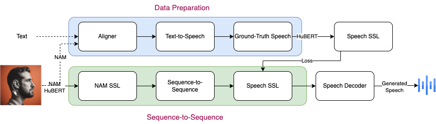

StethoSpeech: Speech Generation Through Stethoscopic Microphone Attached To The Skin
Abstract:
Developing a Non-Audible Murmur (NAM) to Speech conversion system, like StethoSpeech, offers immense potential for improving social interactions, particularly for individuals with voice disorders. This innovation enables silent communication in public settings without others hearing. Unlike traditional methods, StethoSpeech operates without specific speaker-paired data, making it practical for those with severe medical conditions. The system comprises data preparation to create ground-truth speech from NAMs and text, a self-supervised speech encoder, a sequence-to-sequence network for modality mapping, and a speech decoder for synthesis. StethoSpeech has achieved state-of-the-art results in extensive experiments, enhancing speech quality and intelligibility and preserving prosody on the CSTR NAM TIMIT Plus corpus. Moreover, it demonstrated promising outcomes when tested on 8 hours of NAM data from two healthy speakers, marking a significant stride in addressing voice disorders through cutting-edge signal processing advancements.
Proposed Architecture

StethoSpeech is a NAM-to-Speech conversion mechanism in a zero-pair setting. It consists of data preparation, which generates ground-truth speech corresponding to NAMs, a sequence-to-sequence component that maps NAMs' self-supervised representation to speech's self-supervised representation, and a speech decoder that produces output speech corresponding to the input NAM signal.
Comparing speech generated with baselines and StethoSpeech methods on CSTR NAM TIMIT Plus corpus
Text
NAM
DiscoGAN
MSpec-Net
StethoSpeech (paired)
StethoSpeech (unpaired)
It is a terrible loss.
It's the whole season.
Generated ground-truth using paired and unpaired methods on CSTR NAM TIMIT Plus corpus
Text
NAM
Generated Ground-Truth (paired)
Generated Ground-Truth (unpaired)
I think we're going to make it.
I now know that from memory.
They have no other children.
That was a month ago.
It's the whole season.
More samples from our proposed methods on CSTR NAM TIMIT Plus corpus
Text
NAM
StethoSpeech (paired)
StethoSpeech (unpaired)
I am not retiring.
I hated the word.
That was a month ago.
People have been wonderful beyond belief.
I think we're going to make it.
I didn't know where they were.
I now know that from memory.
The decision was welcomed by downing street.
Like everything in scotland it takes time.
There was a battle their.
Samples from speaker s1 in CVIT NAM corpus
Text
NAM
Generated Ground-Truth
Generated Speech in voice 1
Generated Speech in voice 2
He will never walk the streets again.
He was the architect.
The lion followed him and overtook the camel.
Lion demanded to know the story.
Let us kill him and survive.
They would then be able to make money.
Samples from speaker s2 in CVIT NAM corpus
Text
NAM
Generated Ground-Truth
Generated Speech in voice 1
Generated Speech in voice 2
I suggest you must offer yourself to the lion.
The jury is still out.
This will help our confidence.
And there was a dog that barked.
He was eager to show his mother, how brave he was.
He kept repeating it, all the way.
Speech recognition on noisy speech versus noisy vibrations processed by StethoSpeech in a similar environment